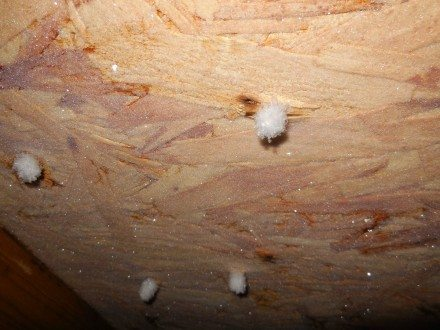

这些天，大多地区不是暴雪，就是严寒，让人们真正的体会到了“我们生活在加拿大”这句话的含义。陈博士也接到了一些屋主的询问电话：“我家阁楼里都是霜冻，这是怎么回事？“有霜冻，是不是保温棉出现了问题，还是通风出现了问题？”

下面我给大家介绍一下：为什么阁楼里会有霜冻？霜冻有什么危害？如何防止霜冻？
为什么阁楼里会有霜冻？
我们知道热空气要比冷空气能含更多的水份。比如20度的空气，能包含15 g/kg的水份；而0度的空气，则只能包含3.8 g/kg的水份。
所以，当室内的暧空气进入寒冷的阁楼后，温度骤降，空气里的气态水就会在屋顶板上冷凝成液态水。如果阁楼足够冷，冷凝水就会进而变成霜冻，甚至结成冰。所以室内湿热空气进入阁楼冷凝是霜冻的根本原因。
霜冻有什么危害？
其实，霜冻本身没有什么危害。主要是温度变暖后，霜冻就会变成水。而“水”则是房子的最大敌人：它使屋顶板/房梁腐烂，生霉，降低屋顶结构强度；滴下的水使保温棉变湿，降低其保温效果；滴下的水也会破坏天花板，等等。
如果预防霜冻？
- 密封：阁楼必须要做到密封。密封是减少和预防霜冻的根本措施。在安装保温棉之前，通常会在整个天花板的上面铺一层连续的塑料膜（老的房子有可能是牛皮纸）。这层塑料膜就是用来密封，防止室内湿热空气进入阁楼。
- 降低室内湿度：屋内湿度越大，阁楼里有霜冻的可能性也就越大。毕竟，无论如何密封，总会有少量的室内空气漏入阁楼。屋主可以通过关闭暖气炉上的加湿器，打开排风扇，减少室内植物，避免室内晾晒衣服等等，来降低室内的湿度。有必要的话，可以考虑安装热回收通风器（Heat Recovery Ventilators ，HRVs)等等。
- 平衡室内的气压：在室内，暖空气会自然向上流，形成高气压；而冷空气重，自然下降，形成低气压。所以，房子越高，热空气形成的高气压也越大，阁楼里有霜冻的可能性也越大。
- 阁楼通风：增加屋顶通风口，能防止霜冻吗？答案是：有可能。毋庸置疑，好的通风，能让阁楼保持干燥。少量漏入阁楼的室内空气，因为通风好，能在没有冷凝前，就被吹出阁楼，从而避免冷凝水和霜冻的产生。
防潮膜一定要连续不能有缝隙，特别是天花板开口处，比如：阁楼入口，穿线洞口，管道口，浴室内排风扇边缘的接口，烟囱的接口，天窗的接口，以及门窗与墙壁间的缝隙。而这些接口处，也正是经常让人们忽略的地方。防潮膜不连续，它的效果就事倍功半，形成短板效应。
此外，如果地下室回风管道有很多的开口，那么暖气炉工作时，地下室就会产生一个负气压，而楼上会自然形成一个正气压。正气压能使暧空气加剧泄漏到阁楼里。所以，应该尽量减少地下室回风管道的开口数。
但是，如果通风口安装不当，或是过度通风，就会造成阁楼内产生负气压，从而更多的室内热空气会被吸入阁楼，让霜冻冷凝问题更加严重。所以，增加屋顶通风口应该是防止阁楼霜冻的最后一个可行方案。
增加保温棉能防止霜冻吗？
答案是：不能。因为湿热空气进入阁楼冷凝是霜冻的根本原因。保温棉不能阻挡热空气进入阁楼，相反它会让阁楼更冷，从而加剧霜冻的产生。
版权声明：本网站所有内容，包括文字和音频，版权均属「陈博士验房」所有。任何个人、机构、组织未经本网允许，不得复制、改编、转发本网站内容到任何其它平台，违者将追究法律责任.